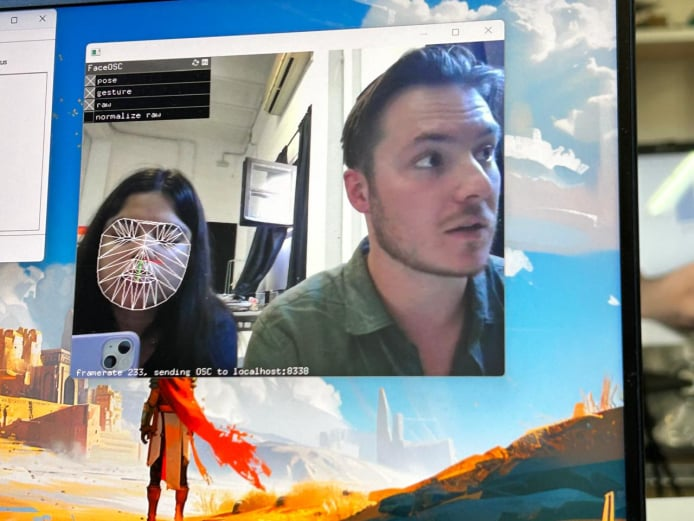
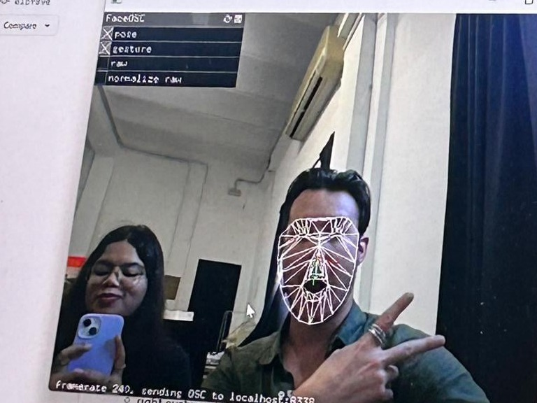
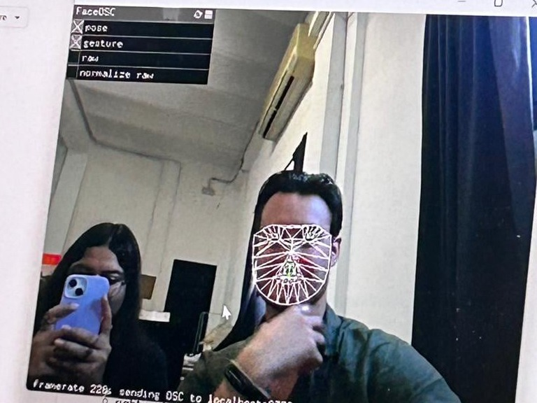
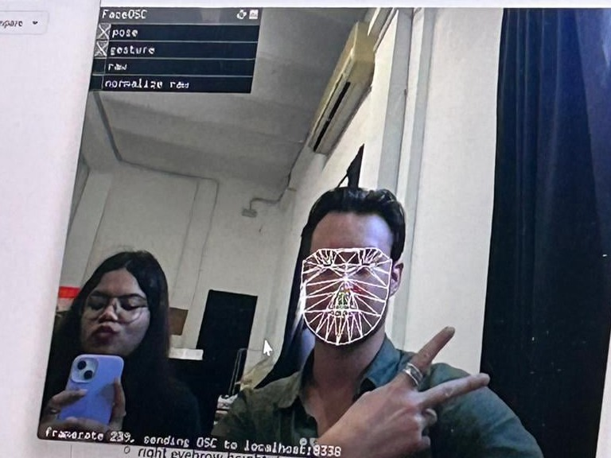
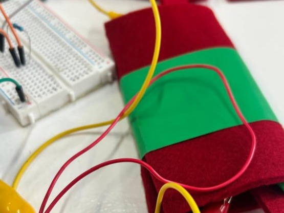
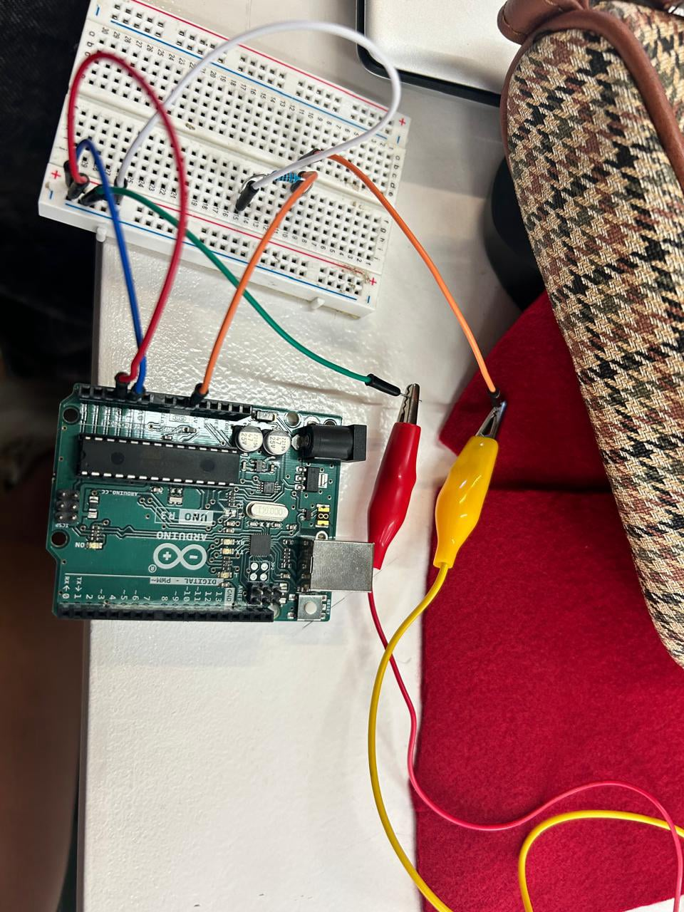
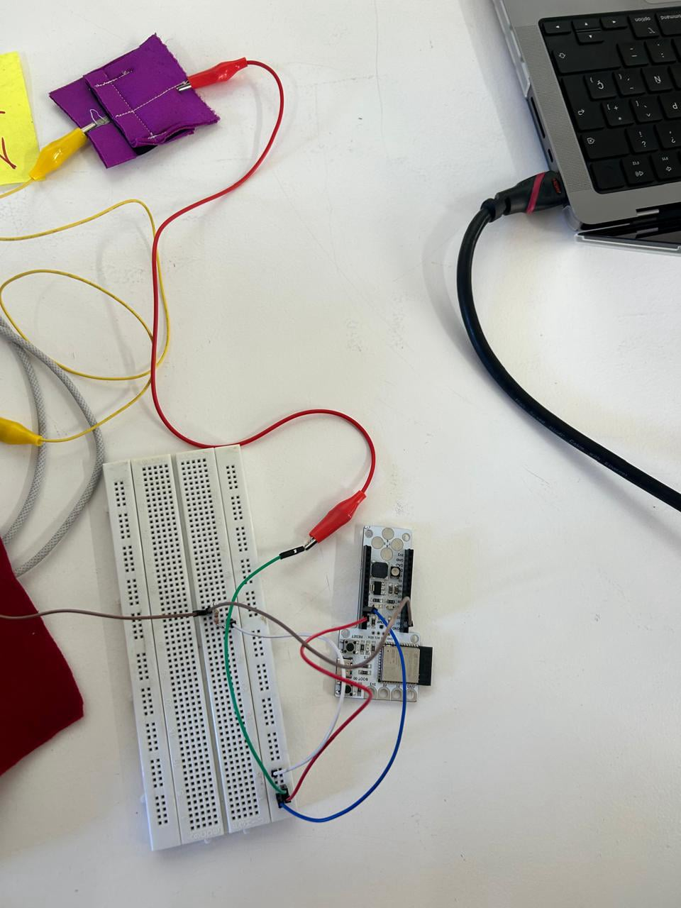
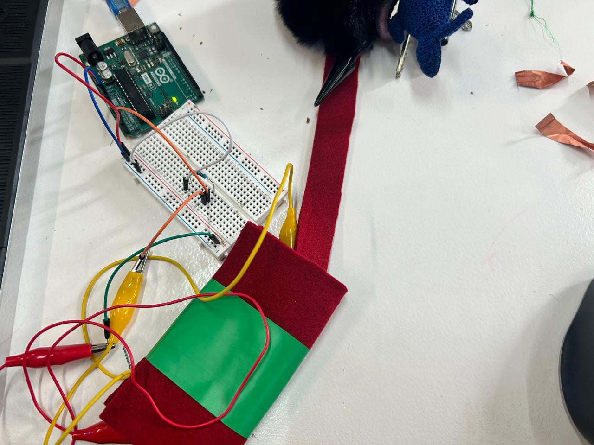

AI Website GeneratorGathering Data from ourselves and then doing something with the data
What is the body?
How do we perceive our bodies in terms of identity?
Body is a medium or tool for expression or as a topic to research.
The body - individual, politic and social
Affective Computing
Feelings - play an important role in our relation switch other people but also in the way we use computers
Is a domain that focuses on user emotions while they interact with computers and applications
Emotion is a reaction to a stimuli that lasts for seconds of minutes
Mood is an emotional state that lasts for hours or days
Personality is inclination to feel certain emotions
Understanding emotions
A reaction to external stimuli, perceived by our senses.
Expressing emotions with our face - macro and micro expressions
We behave and respond to our emotions with our actions
Our body reacts and can tell us how others are feeling
Emotion Detection
Emotion recognition solutions depend on which emotions we want a machine to recognize and for what purpose.
Emotion Detection & Machine Learning
→ Machine learning works by examining some data and trying to make sense of that data.
→ Machine learning helps us tell the computer to learn patterns.
→ Machine learning is creating a system in order to let the computer learn by itself.
→ The system works by creating and using a data set, and then let the machine create a prediction under specific rules.
What a Machine Learning System is and needs:
0. Data sets
1. Algorithms (Neural nets, Markov Chains, etc)
2. Models (trained)




Interaction is a reciprocal action that is exercised between several object, people or entities in which there is a mutual influence.
Sketch pad 1963 - ivan sutherland - HCI Human Computer Interaction
How does an interaction happen?
Input - Gesture, Movement and Action
Mapping and data processing
Output - Light, Mechanism, Sound etc
Electronics
Inputs
The sensors that we connect to XIAO can be made up of specific circuits that allow physical magnitudes to be measured and with Arduino they are converted to voltage
We can get sensors with already built circuits and PCBs called breakout boards
We can assemble the circuits for the sensors
We can build our own DIY/DIWO sensor




Exploring the capabilities of technology through interactive and creative projects is always an enlightening journey. Recently, I engaged in two intriguing activities that not only sparked my curiosity but also opened doors to innovative possibilities for future endeavors.
The first activity involved training a software called Wekinator with my facial expressions to gauge its ability to interpret my emotions. This experiment was not only enjoyable but also surprisingly easy to set up and train. Witnessing Wekinator accurately interpret my expressions was a testament to the advancements in machine learning and its potential applications in various fields. The thought of integrating such technology into future projects excites me immensely. Imagine creating interactive installations or applications that can adapt and respond to users' emotions in real-time, enhancing user experience and engagement. This could revolutionize fields such as interactive art, gaming, and even mental health monitoring and support.
The second activity revolved around crafting a touch-sensitive sensor using conductive clothing material and basic Arduino coding. Building a wearable sensor that lights up upon detecting weight was a delightful experience. It not only showcased the fusion of technology and fashion but also offered a tangible solution to address everyday concerns. The potential applications of such a sensor are vast and intriguing. From stress-relief garments that gently remind wearers to relax to smart textiles embedded with safety features for the elderly or workers in hazardous environments, the possibilities are endless. Integrating this technology into future projects could lead to the creation of innovative wearables that not only serve practical purposes but also elevate the intersection of fashion and technology.
Reflecting on these activities, I am inspired by the blend of creativity, exploration, and technological innovation they encompassed. Both experiences have sparked my imagination and motivated me to delve deeper into the realms of machine learning and wearable technology. As I contemplate future projects, I am eager to explore how I can leverage these concepts to create meaningful and impactful solutions that resonate with users on a personal level. Whether it's enhancing emotional intelligence through interactive experiences or improving daily lives through intuitive wearables, the potential for innovation is boundless. These activities have not only expanded my skill set but also ignited a passion for pushing the boundaries of what's possible in the realm of technology-driven creativity.
AI Website Generator